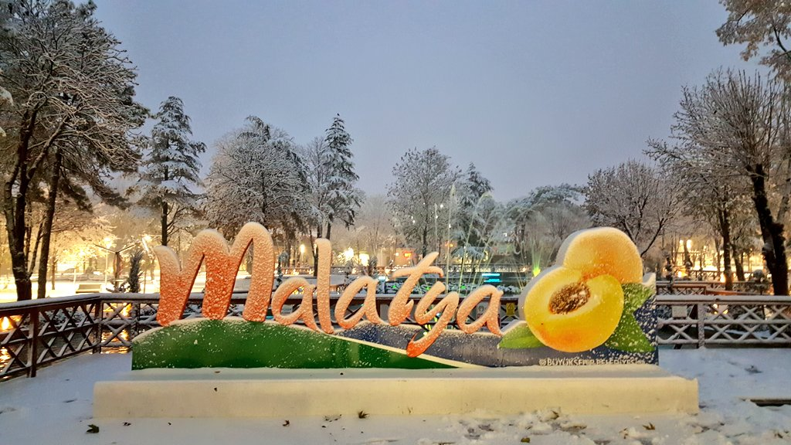
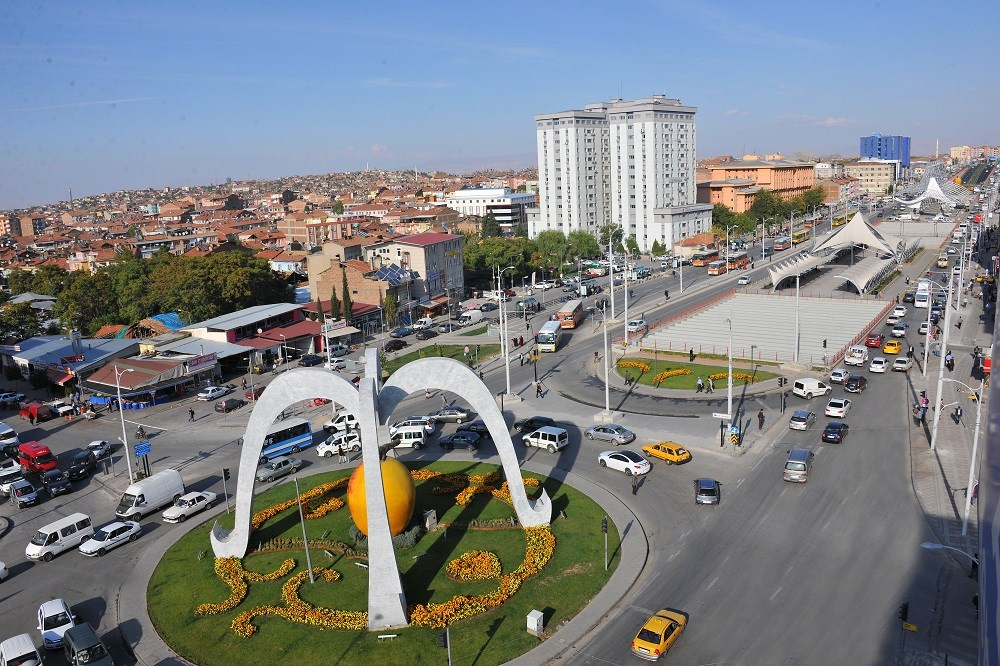

MALATYAYA HOŞGELDİNİZ
Malatya İle Tanışmaya Hazır Olun

Malatya Tarih ve Doğanın Eşsiz Buluşması
Anadolu'nun kalbinde yer alan Malatya, zengin kültürü, tarihi derinliği ve doğal güzellikleriyle
tanınan bir şehirdir. Binlerce yıllık geçmişiyle Hitilerden Osmanlılara kadar birçok Uygarlığa ev
sahipliği yapmış olan Malatya, bugün de tarihin izlerini taşıyan önemli bir merkezdir. Arslantepe
Höyüğü,
UNSECO Dünya Mirası listesinde yer alarak kentin kadim geçmişine ışık tutmaktadır. Tarihi kalıntılarının
yanı sıra Malatya, doğal güzellikleri ve lezzetli mutfağıyla da ünlüdür. Dünya çapında meşhur olan
Malatya
kaysısı, şehri ziyaret edenlerin mutlaka tatması gereken bir lezzettir.

Nemrut Dağı’na yakın konumu, Karakaya Baraj Gölü’nün büyüleyici manzarası ve doğa
sporlarına elverişli dağlarıyla Malatya, doğaseverler için adeta bir cennettir.
Modern şehir yaşamı ile köklü geleneklerin iç içe geçtiği bu şehir, misafirperver
insanlarıyla sizi karşılayacak. Malatya’yı keşfedin; tarih, kültür ve doğa ile iç
içe bir deneyim yaşayın!